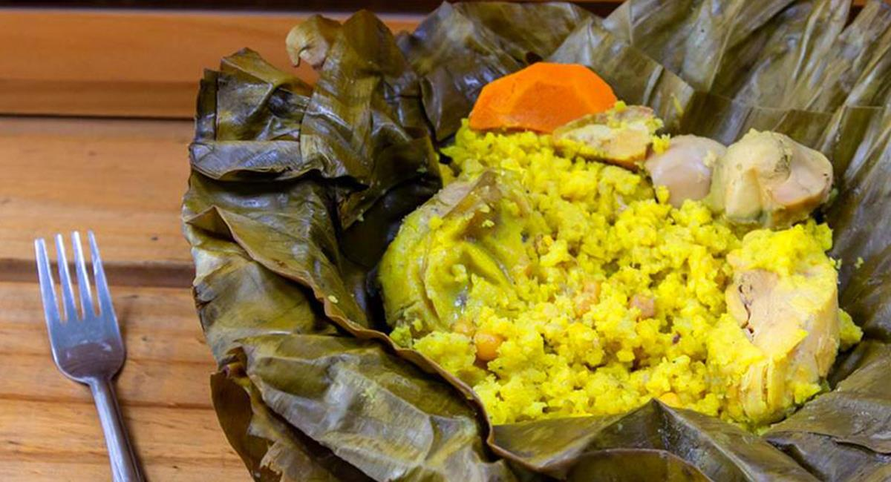

Region Andina
La region andina de Colombia es una parte importante del pais que abarca la porcion central y oriental de la Cordillera de los Andes. Esta region se caracteriza por su topografia montañosa, que incluye altas cumbres, valles fertiles y una gran diversidad de ecosistemas. La region andina colombiana se divide en tres cordilleras principales: la Cordillera Oriental, la Cordillera Central y la Cordillera Occidental.
|  |

|

|

|
Los tamales |
Bandeja Paisa |
Arepa De Queso |
Lechona |